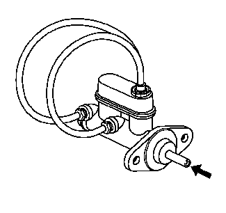

总泵台钳排气

警告：
参见
有关制动液刺激性的警告
。
告诫：
参见
有关制动液对油漆和电气部件影响的告诫
。
1.
将制动总泵的安装法兰卡在测试台台钳上，露出主活塞的后端。
2.
拆下总泵储液罐盖和膜片。
3.
将合适的接头安装至总泵孔口，要与所要求的扩口座类型相匹配并且提供软管接头。
4.
将透明软管安装至总泵孔口上的接头，然而再将软管排布到总泵储液罐中。
5.
用存放在清洁、密封的制动液容器中上汽通用认可的制动液将总泵储液罐至少添加到半满位置。参见
总泵储液罐的加注
。
6.
确保通向总泵储液罐的透明软管端部完全浸入制动液中。
7.
用光滑、圆头工具多次按压和松开主活塞，直到它的行程达到最大，大约25毫米（1英寸）的深度。观察孔口油液的流出情况。
当空气从主活塞和辅助活塞排出时，按压主活塞所需的力将增加，而行程量减小。
8.
继续按压并松开主活塞，直到油液顺畅地从孔口流出，且没有气泡。
9.
将透明软管从总泵储液罐上拆下。
10.
安装总泵储液罐盖和膜片。
11.
将接头和透明软管从总泵孔口上拆下。用清洁的抹布包住总泵，防止制动液溢出。
12.
将总泵从台钳上拆下。